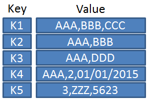

Descomplicando Kubernetes Day 6
Sumário
Security Context
Security Context são um conjunto de configurações onde definimos privilégios e acessos a um pod. Essas configurações incluem:
- Definir o usuário e grupo do contêiner;
- Se o contêiner será um contêiner privilegiado;
- Linux Capabilities;
- Se o contêiner pode escalar privilégios;
- Utilizar SELinux/APPArmor.
Utilizando o security Context
Para utilizar essa configuração precisamos incluir o bloco securityCotext no manifesto do pod.
Primeiro vamos definir um usuário e grupo para nosso contêiner através das flags runAsUser e runAsGroup. O usuário e grupo devem ser informados por UID. Exemplo: 1000.
Crie um arquivo busy-security-user.yaml:
vim busy-security-user.yaml
Informe o seguinte conteúdo:
apiVersion: v1
kind: Pod
metadata:
name: busy-security-user
spec:
securityContext:
runAsUser: 1000
runAsGroup: 1000
containers:
- name: sec-busy
image: busybox
command: [ "sh", "-c", "sleep 1h" ]
No exemplo anterior utilizamos o user/group ID 1000 para o contêiner.
Crie o pod:
kubectl create -f busy-security-user.yaml
pod/busy-security-user created
Vamos executar o comando a seguir para verificar com o id nosso usuário e grupo.
kubectl exec busy-security-user -- id
uid=1000 gid=1000
As configurações de securityContext definidas no contêiner são aplicadas somente a ele, já se são definidas no bloco securityContext fora de containers será aplicada para todos contêineres no manifesto.
Crie um arquivo busy-security-uid.yaml:
vim busy-security-uid.yaml
Informe o seguinte conteúdo:
apiVersion: v1
kind: Pod
metadata:
name: busy-security-uid
spec:
securityContext:
runAsUser: 1000
runAsGroup: 1000
containers:
- name: sec-busy
image: busybox
securityContext:
runAsUser: 2000
runAsGroup: 2000
command: [ "sh", "-c", "sleep 1h" ]
Crie o pod:
kubectl create -f busy-security-uid.yaml
pod/busy-security-uid created
Verifique novamente o id nosso usuário e grupo.
kubectl exec busy-security-uid -- id
uid=2000 gid=1000
As configurações declaradas em contêineres sempre serão prioritárias e irão sobrescrever as demais.
Capabilities
Nos sistemas UNIX existem basicamente duas categorias de processos: processos privilegiados que são executados como o UID 0 (root ou superusuario) e os não privilegiados que possuem o UID diferente de 0.
Os processos privilegiados dão bypass em todas as verificações do kernel. Já os processos não-privilegiados passam por algumas checagens como UID, GID e ACLS.
Começando no kernel 2.2, o GNU/Linux dividiu as formas tradicionais de privilégios associados ao superusuários em unidades diferentes, agora conhecidas como capabilities, que podem ser habilitadas e desabilitadas independentemente umas das outras. Essas capacidades são atribuídas por thread.
Um pouco mais sobre capabilities está disponível na página: http://man7.org/linux/man-pages/man7/capabilities.7.html
Para demonstrar, vamos fazer um teste tentando alterar a hora de um contêiner.
Crie um arquivo busy-security-cap.yaml:
vim busy-security-cap.yaml
Informe o seguinte conteúdo:
apiVersion: v1
kind: Pod
metadata:
name: busy-security-cap
spec:
containers:
- name: sec-busy
image: busybox
command: [ "sh", "-c", "sleep 1h" ]
Crie o pod:
kubectl create -f busy-security-cap.yaml
pod/busy-security-cap created
Verifique a hora do contêiner:
kubectl exec busy-security-cap -- date -s "18:00:00"
date: can't set date: Operation not permitted
Adicionando a capabilitie SYS_TIME no contêiner:
vim busy-security-cap.yaml
Altere o arquivo com o conteúdo a seguir:
apiVersion: v1
kind: Pod
metadata:
name: busy-security-cap
spec:
containers:
- name: sec-busy
image: busybox
securityContext:
capabilities:
add: ["SYS_TIME"]
command: [ "sh", "-c", "sleep 1h" ]
Delete o pod e recrie novamente:
kubectl delete -f busy-security-cap.yaml
pod "busy-security-cap" deleted
kubectl create -f busy-security-cap.yaml
pod/busy-security-cap created
Verifique novamente a hora do contêiner:
kubectl exec busy-security-cap -- date -s "18:00:00"
Sat May 16 18:00:00 UTC 2020
Manutenção do Cluster ETCD
O que preciso saber antes de começar?
ETCD é um dos componentes fundamentais que fazem o Kubernetes funcionar.
O que é o ETCD?
Basicamente, o ETCD é um database de armazenamento de chave-valor de alta disponibilidade.
Em um banco de dados relacional, nós temos colunas e dentro das colunas nós temos o tipo de informação que está sendo armazenada;
| Banco de dados relacional Ref: hswstatic.com |
Em um banco de dados de chave-valor, quando consultamos e obtemos a chave, é retornado o valor atribuido à aquela chave.
|  |
|---|
| Banco de dados chave-valor Ref: Wikimedia.org |
Quando consultamos a chave k1, o resultado retornado é o valor: AAA,BBB,CCC
Quando consultamos a chave k5, o resultado retornado é o valor: 3,ZZZ,5623
ETCD no Kubernetes
No kubernetes, o ETCD é responsável por registrar todo tipo de informação do cluster, tais como: nodes, roles, pods, configs, accounts, secrets, etc.
Quando o cluster é iniciado pelo kubeadm, um pod do etcd é criado no node master.
Toda informação que é apresentada ao usuário quando executado o comando kubect get são informações armazenadas no ETCD.
Vejamos se o pod etcd foi criado com sucesso com o seguinte comando.
kubectl get pods -n kube-system
NAME READY STATUS RESTARTS AGE
coredns-66bff467f8-pfm2c 1/1 Running 0 8d
coredns-66bff467f8-s8pk4 1/1 Running 0 8d
etcd-docker-01 1/1 Running 0 8d
kube-apiserver-docker-01 1/1 Running 0 8d
kube-controller-manager-docker-01 1/1 Running 0 8d
kube-proxy-mdcgf 1/1 Running 0 8d
kube-proxy-q9cvf 1/1 Running 0 8d
kube-proxy-vf8mq 1/1 Running 0 8d
kube-scheduler-docker-01 1/1 Running 0 8d
weave-net-7dhpf 2/2 Running 0 8d
weave-net-fvttp 2/2 Running 0 8d
weave-net-xl7km 2/2 Running 0 8d
Certificados ETCD
O ETCD, como os demais serviços do Kubernetes, utilizam certificados PKI para autenticação sobre TLS, essas chaves são declaradas no manifesto de configuração em:
kubectl describe pod etcd-docker-01 -n kube-system
Parâmetros:
--cert-file
--key-file
--trusted-ca-file
Essas chaves vão ser utilizadas pelos demais componentes do cluster como, por exemplo, o API Server possam conectar e fazerem alterações.
kubectl describe pod kube-apiserver -n kube-system
Parâmetros:
--etcd-cafile
--etcd-certfile
--etcd-keyfile
Então, para toda e qualquer interação com o ETCD vamos precisar utilizar esses certificados para nos autenticar.
Interagindo com o ETCD
Para interagir com o ETCD vamos precisar o etcdctl ou utilizar o próprio contêiner do etcd com o comando kubectl exec
Referência: https://github.com/etcd-io/etcd/tree/master/etcdctl
Baixando a ultima versão do etcd:
GNU/Linux:
ETCD_VER=v3.4.7
GOOGLE_URL=https://storage.googleapis.com/etcd
GITHUB_URL=https://github.com/etcd-io/etcd/releases/download
DOWNLOAD_URL=${GOOGLE_URL}
rm -f /tmp/etcd-${ETCD_VER}-linux-amd64.tar.gz
rm -rf /tmp/etcd-download-test && mkdir -p /tmp/etcd-download-test
curl -L ${DOWNLOAD_URL}/${ETCD_VER}/etcd-${ETCD_VER}-linux-amd64.tar.gz -o /tmp/etcd-${ETCD_VER}-linux-amd64.tar.gz
tar xzvf /tmp/etcd-${ETCD_VER}-linux-amd64.tar.gz -C /tmp/etcd-download-test --strip-components=1
rm -f /tmp/etcd-${ETCD_VER}-linux-amd64.tar.gz
/tmp/etcd-download-test/etcd --version
/tmp/etcd-download-test/etcdctl version
Referência: https://github.com/etcd-io/etcd/releases
Como vimos anteriormente, vamos precisar utilizar os certificados para nos autenticar. Vamos fornecer os dados nos seguintes parâmetros no comando:
--cacert
--key
--cert
Além disso vamos precisar do endpoint, caso esteja no contêiner do ETCD seu endpoint será 127.0.0.1:2379.
A sua URL para o endpoint vai estar na flag --advertise-client-urls nas configurações do ETCD.
ETCDCTL:
ETCDCTL_API=3 etcdctl \
--cacert /var/lib/minikube/certs/etcd/ca.crt \
--key /var/lib/minikube/certs/etcd/server.key \
--cert /var/lib/minikube/certs/etcd/server.crt \
--endpoints $ADVERTISE_URL \
get / --prefix --keys-only
O comando kubectl exec ficará similar ao mostrado a seguir.
kubectl exec -it etcd-minikube -n kube-system \
-- etcdctl --endpoints=https://127.0.0.1:2379 \
--cacert=/var/lib/minikube/certs/etcd/ca.crt \
--key=/var/lib/minikube/certs/etcd/server.key \
--cert=/var/lib/minikube/certs/etcd/server.crt get / --prefix --keys-only
Output:
/registry/apiregistration.k8s.io/apiservices/v1.
/registry/apiregistration.k8s.io/apiservices/v1.admissionregistration.k8s.io
/registry/apiregistration.k8s.io/apiservices/v1.apiextensions.k8s.io
/registry/apiregistration.k8s.io/apiservices/v1.apps
/registry/apiregistration.k8s.io/apiservices/v1.authentication.k8s.io
/registry/apiregistration.k8s.io/apiservices/v1.authorization.k8s.io
/registry/apiregistration.k8s.io/apiservices/v1.autoscaling
/registry/apiregistration.k8s.io/apiservices/v1.batch
/registry/apiregistration.k8s.io/apiservices/v1.coordination.k8s.io
/registry/apiregistration.k8s.io/apiservices/v1.networking.k8s.io
/registry/apiregistration.k8s.io/apiservices/v1.rbac.authorization.k8s.io
/registry/apiregistration.k8s.io/apiservices/v1.scheduling.k8s.io
/registry/apiregistration.k8s.io/apiservices/v1.storage.k8s.io
/registry/apiregistration.k8s.io/apiservices/v1beta1.admissionregistration.k8s.io
/registry/apiregistration.k8s.io/apiservices/v1beta1.apiextensions.k8s.io
/registry/apiregistration.k8s.io/apiservices/v1beta1.authentication.k8s.io
/registry/apiregistration.k8s.io/apiservices/v1beta1.authorization.k8s.io
Aqui temos uma parte do conteúdo da resposta do get no / do ETCD, onde listamos todas as chaves do etcd.
Em um exemplo um pouco mais prático, vamos listar apenas as chaves dos pods no namespace default. O parâmetro para que o output contenha apenas as chaves é --keys-only.
kubectl exec -it etcd-minikube -n kube-system \
-- etcdctl --endpoints=https://127.0.0.1:2379 \
--cacert=/var/lib/minikube/certs/etcd/ca.crt \
--key=/var/lib/minikube/certs/etcd/server.key \
--cert=/var/lib/minikube/certs/etcd/server.crt get /registry/pods/default \
--prefix=true --keys-only
Output:
/registry/pods/default/nginx
Agora vamos ver os valores contidos na chave /registry/pods/default/nginx, onde estão as configurações do pod. Vamos remover o parâmetro --keys-only para que possamos ver os valores da chave.
kubectl exec -it etcd-minikube -n kube-system \
-- etcdctl --endpoints=https://127.0.0.1:2379 \
--cacert=/var/lib/minikube/certs/etcd/ca.crt \
--key=/var/lib/minikube/certs/etcd/server.key \
--cert=/var/lib/minikube/certs/etcd/server.crt get /registry/pods/default/nginx \
--prefix=true
Output:
k8s
v1Pod
nginxdefault"*$a748750e-7582-4db5-ab63-0fab1d0c91542Z
runnginxz
kubectlUpdatev����FieldsV1:�
�{"f:metadata":{"f:labels":{".":{},"f:run":{}}},"f:spec":{"f:containers":{"k:{\"name\":\"nginx\"}":{".":{},"f:image":{},"f:imagePullPolicy":{},"f:name":{},"f:resources":{},"f:terminationMessagePath":{},"f:terminationMessagePolicy":{}}},"f:dnsPolicy":{},"f:enableServiceLinks":{},"f:restartPolicy":{},"f:schedulerName":{},"f:securityContext":{},"f:terminationGracePeriodSeconds":{}}}��
kubeletUpdatev����FieldsV1:�
�{"f:status":{"f:conditions":{"k:{\"type\":\"ContainersReady\"}":{".":{},"f:lastProbeTime":{},"f:lastTransitionTime":{},"f:status":{},"f:type":{}},"k:{\"type\":\"Initialized\"}":{".":{},"f:lastProbeTime":{},"f:lastTransitionTime":{},"f:status":{},"f:type":{}},"k:{\"type\":\"Ready\"}":{".":{},"f:lastProbeTime":{},"f:lastTransitionTime":{},"f:status":{},"f:type":{}}},"f:containerStatuses":{},"f:hostIP":{},"f:phase":{},"f:podIP":{},"f:podIPs":{".":{},"k:{\"ip\":\"172.17.0.5\"}":{".":{},"f:ip":{}}},"f:startTime":{}}}�
1
default-token-657qb2
default-token-657qb��
nginxnginx*BJJ
default-token-657qb-/var/run/secrets/kubernetes.io/serviceaccount"2j/dev/termination-logrAlways����FileAlways 2
ClusterFirstBdefaultJdefaultminikubeX`hr���default-scheduler�6
node.kubernetes.io/not-readyExists" NoExecute(��8
node.kubernetes.io/unreachableExists" NoExecute(�����
Running#
InitializedTru����*2
ReadyTru����*2'
ContainersReadyTru����*2$
PodScheduledTru����*2"*
192.168.64.22
172.17.0.����B�
nginx
���� (2
nginx:latest:_docker-pullable://nginx@sha256:86ae264c3f4acb99b2dee4d0098c40cb8c46dcf9e1148f05d3a51c4df6758c12BIdocker://4f42eaab397e862432c01d66d44b6e2d395ffae5e5dd16cfb83d906b3fc5022bHJ
BestEffortZb
172.17.0.5"
Isso foi um pouco de como podemos interagir diretamente com o ETCD.
Backup do ETCD no Kubernetes
Como sabemos, o ETCD é responsável por armazenar todo tipo de informação sobre o estado do nosso cluster.
Para realizarmos o backup (snapshot) do ETCD, precisamos utilizar alguns comandos built-in que já vem com o próprio ETCD.
Esse snapshot, contém todos os dados do estado do cluster.
Para realizar o snapshot do ETCD sem a autenticação TLS habilitado, precisamos executar o seguinte comando.
ETCDCTL_API=3 etcdctl \
--endpoints $ENDPOINT \
snapshot save snapshot.db
Visualizando o status.
ETCDCTL_API=3 etcdctl \
--write-out=table \
snapshot status snapshot.db
Output:
+----------+----------+------------+------------+
| HASH | REVISION | TOTAL KEYS | TOTAL SIZE |
+----------+----------+------------+------------+
| fe01cf57 | 10 | 7 | 2.1 MB |
+----------+----------+------------+------------+
Existem algumas diferenças ao realizar o snapshot do ETCD com o TLS habilitado que são obrigatórias:
Além do --endpoits, precisamos adicionar as chaves e certificados referentes ao TLS que são:
--cacert- verifica os certificados dos servidores que estão com TLS habilitados;--cert- identifica o cliente usando o certificado TLS;--endpoints=[127.0.0.1:2379]- novamente, esse é o valor padrão de onde o ETCD está rodando no nó master com a porta padrão do ETCD, 2379 - TCP;--key- identifica o cliente usando a chave TLS;
Logo, o comando ficará assim:
ETCDCTL_API=3 etcdctl \
--cacert /var/lib/minikube/certs/etcd/ca.crt \
--key /var/lib/minikube/certs/etcd/server.key \
--cert /var/lib/minikube/certs/etcd/server.crt \
--endpoints [127.0.0.1:2379] \
snapshot save snapshot.db
Dicas para os exames
Para a prova do CKA é bem relevante saber como o ETCD funciona.
O assunto do ETCD está relacionado aos 11% do Cluster Maintenance.
Porém, pode ser que você seja obrigado a salvar esse snapshot em um diretório específico. Exemplo: /tmp/.
Com isso, o comando ficaria assim:
ETCDCTL_API=3 etcdctl \
--cacert /var/lib/minikube/certs/etcd/ca.crt \
--key /var/lib/minikube/certs/etcd/server.key \
--cert /var/lib/minikube/certs/etcd/server.crt \
--endpoints [127.0.0.1:2379] \
snapshot save /tmp/snapshot.db
Para fazer o restore usando o arquivo de backup /tmp/snapshot.db podemos executar os seguintes comandos:
ETCDCTL_API=3 etcdctl \
--cacert /var/lib/minikube/certs/etcd/ca.crt \
--key /var/lib/minikube/certs/etcd/server.key \
--cert /var/lib/minikube/certs/etcd/server.crt \
--endpoints 127.0.0.1:2379 \
snapshot restore /tmp/snapshot.db
sudo mv /var/lib/etcd/member /var/lib/etcd/member.old
sudo mv /var/lib/etcd/default.etcd/member /var/lib/etcd/